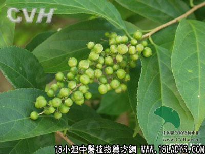

别名：石莲子根。
植物名：南蛇簕。
生长环境：本品为披散藤状灌木，多在郊外野生。
分布：广州近郊常见。
入药部分：根。
采集期：不拘时采根，冬季采子。
自采地点：广州花都、从化等地。
性味：性凉、味苦。
功能：止痒、解毒、消肿。
主治、用量和用法：1、癍痧发热：用干根5钱至1两，清水煎服；2、风湿骨痛：用干根5钱至1两，清水煎服；3、皮肤生蛇：用干根1至2两，清水煎洗患处。
验方：（治伤寒夹色方）蚺蛇簕根5钱、兔狗尾5钱、海金沙5钱、簕角根5钱、鸭脚皮3钱、榕树须3钱、香付子3钱、清水五碗，煎成一碗半，热服。
（方解）蚺蛇簕清热、簕角根、兔狗尾、海金沙利水解毒，鸭脚皮、榕树须，疏散表邪，使邪从外解，加香付子行气疏肝。合为解表利尿、行气清热之剂，对房劳并感风寒发热者有效。
（方歌）伤寒夹色蚺蛇簕，鸭脚榕须香付实，海金狗尾簕角根，表里双解去毒疾。
附录：（子）1、治癍痧发热；2、治心气痛；3、治小肠气痛，以上均用子5钱至1两，打碎，清水煎服。
本文解释权归中药大全，本文地址：https://www.daquan.com/post/1560.html